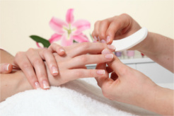
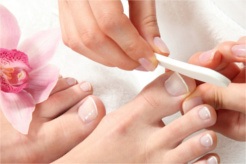
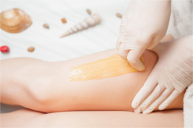
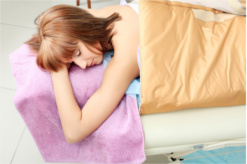
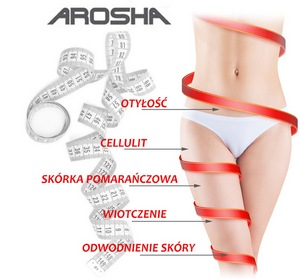

Dołącz do nas na:


{kind=link}
{kind=link}
{kind=link}
{kind=link}
Wykonywane zabiegi
Oraz przydatne informacje
Od bardzo dawna kobiety zawsze pragnęły być piękne i młode. Nie bez przyczyny dzięki temu wzbudzają podziw oraz pożądanie wśród płci przeciwnej, są bardziej pewne siebie, co pozwala im odnieść większy sukces. Dlatego też, tak ważna jest pielęgnacja naszego ciała. W naszym gabinecie pragniemy pomóc kobietom poczuć się zawsze pięknie! Korzystając z naszych usług oraz rad będziesz mogła przez długi czas cieszyć się młodym wyglądem, cieszyć się niesamowicie gładką i jędrną skórą.
Manicure

Piękne dłonie i paznokcie to nie przypadek, są wizytówką każdej kobiety i jednym z najbardziej widocznych atrybutów urody. Wygląd dłoni jest jak otwarta księga, która dostarcza informacji o naszym temperamencie, osobowości i stylu życia. Skóra rąk charakteryzuje się szczególną delikatnością, ponieważ nie posiada tkanki tłuszczowej, dlatego też mając codzienny kontakt z czynnikami zewnętrznymi podlega nadmiernemu wysuszeniu i czyni ręce szorstkimi. Często starzeje się w bardziej widoczny sposób niż twarz i ciało. Kobiety marzą o pięknych dłoniach, długich i zdrowych paznokciach, które są zwierciadłem stanu zdrowia organizmu, lecz ich wygląd jest często uwarunkowany genetycznie. Możemy poprawiać ich kondycję zdrową dietą, preparatami - witaminami jak również przeróżnymi zabiegami pielęgnacyjnymi, jednak nic nie zastąpi prawidłowo wykonanego manicure, który nada naszym dłoniom elegancji i smukłości.
Pedicure

Zdrowe, wypielęgnowane stopy są ważnym elementem urody oraz podstawą dobrego samopoczucia. Delikatna, gładka skóra oraz kształtne paznokcie dodają powabu i lekkości. Dlatego warto otoczyć stopy szczególną troską i wykonać profesjonalny pedicure, który jest nie tylko zabiegiem upiększającym, ale również leczniczym. Podstawową częścią pedicure jest usunięcie zrogowaciałego naskórka ze spodu stóp, likwidacja odcisków, modzeli oraz prawidłowe ukształtowanie paznokcia.
Depilacja woskiem

Nie ulega wątpliwości, że usuwanie zbędnego owłosienia - depilacja - stało się powszechnie stosowanym zabiegiem pielęgnacyjnym, a zabieg depilacji traktowany jest dzisiaj przez kobiety, i coraz częściej przez mężczyzn, jako obowiązek. Polega na nakładaniu na skórę ciepłego półpłynnego lub płynnego wosku, który odrywa się szybkim ruchem w stronę przeciwną do kierunku wzrostu włosów. Warunkiem skuteczności tej metody jest odpowiednia długość włosów - powinny mieć minimum 0,5 mm długości. Ten rodzaj depilacji pozwala na wyrwanie włosa wraz z cebulką, po zabiegu włosy odrastają wolniej i są słabsze. Nie należy przez 1-2 dni poddawać wydepilowaną część ciała na słońce czy solarium. Efekt utrzymuje się od 3 do 6 tygodni
Koc sauna Infrared

A może by tak schudnąć leżąc nic nie robiąc ? Sauna Koc Infrared Ciepło promieniowania podczerwonego wnika głęboko w ciało i dzięki zwiększonemu przepływowi krwi rozprzestrzenia się szybko na cały organizm. Temperatura ciała podnosi się do 70 stopni, czego następstwem jest naturalny odruch - pocenie się - i to już przy stosunkowo niskiej temperaturze. Regularna terapia wygrzewania i pocenia się w tej saunie przynosi korzyści dla zdrowia. Podczas zabiegu w saunie IR zwiększa się krążenie krwi, serce bije intensywniej, krew płynie szybciej, nie podnosząc jednak ciśnienia tętniczego. Tlen jest lepiej doprowadzany do komórek ciała. To powoduje odprężenie, redukuje bóle mięśniowe i przyspiesza procesy leczenia.
Terapia podczerwienią wzmacnia system immunologiczny i skutecznie wspomaga walkę z przeziębieniami i zakażeniami grzybopodobnymi w początkowych ich stadiach. Pocenie w trakcie sesji działa na organizm oczyszczająco. Powoduje pozbywanie się niepotrzebnych związków sodu, alkoholu, nikotyny, obniża stężenie cholesterolu oraz przyczynia się do pozbycia nadmiaru wody. Eliminuje również metale rakotwórcze, takie jak kadm, ołów czy cynk. Dzięki polepszaniu procesów metabolicznych terapia pomaga w odchudzaniu. SUCHA KOC INFRARED WSPOMAGA ODCHUDZANIE, PRZYSPIESZA PRZEMIANĘ MATERII I SPALANIE KALORII. Seans w podczerwieni bez obciążania stawów i intensywnych ćwiczeń przyspiesza przemianę materii o około 40%.
W ciągu 30 minut spalić można od 900 do 2400 kilokalorii. Zabieg zastępuje intensywny 10-kilometrowy bieg. Promienie podczerwone eliminują nadmiar soli i tłuszczu podskórnego, ogrzewają ciało do 4 cm w głąb, powodując intensywne pocenie się. Reakcja fali podczerwonej na organizm sprawia, że nie tylko wydalana jest woda /ok. 70% utraty masy ciała/, ale także tłuszcz /15-20%/, cholesterol, metale ciężkie, kwasy i związki toksyczne /10-15%/. KOC ODCHUDZA BEZ WYSIŁKU. Likwiduje nadwyżki tkanki tłuszczowej, redukuje cellulit, przywraca skórze młodzieńczą jędrność. Do zaiegu można dokupić ampułkę wyszczuplająco-antycellulitową bądź skorzystać z body wrapping na jedną partię ciała
- ciąża, karmienie piersią
- choroby skóry (np. bielactwo, łuszczyca)
- opryszczka
- nadwrażliwość skóry na światło
- nowotwory skóry, cukrzyca, epilepsja
- implanty wewnątrz ciała
- leczenie retinoidami (należy odstawić 6 miesięcy przed zabiegiem)
- stosowanie steroidów lub kosmetyków zawierających hormony w okresie ostatnich 3 miesięcy
- aspiryna (nie zażywać tydzień przed)
- leki przeciwbólowe (nie stosować w dniu zabiegu)
- Wzmacnia system odpornościowy
- Przynosi ulge w bólu
- Oczyszcza skórę z toksyn i obumarłego naskórka
- Poprawia kondycję układu sercowo-naczyniowego
- Redukuje napięcia stresowe poprawiając samopoczucie
- należy chronić skórę przed promieniami słonecznymi, zakrywając poddane zabiegowi części ciała lub używać kremów do opalania z wysokim filtrem (od 30SPV) przez okres 4 tygodni od wykonania zabiegu
- nie zażywać środków fotouczulających (dziurawiec, nagietek, bratek, niektóre leki)
Bandaże Arosha

Czym są i dla kogo przeznaczone są zabiegi bandażowania Arosha? Bandaże Arosha to kompleksowe zabiegi pielęgnacyjne, przeznaczone do walki z cellulitem oraz z niedoskonałościami ciała. Bandaże Arosha są wykonane z delikatnej bawełny, która jest nasączona wysoce skoncentrowanymi aktywnymi składnikami. Dzięki nim zabiegi skutecznie redukują cellulit, mają właściwości modelujące, ujędrniające, nawilżające ciało oraz pomagają w walce z pierwszymi oznakami starzenia się skóry.
Jakie są rodzaje bandaży? AQUA-DRAIN - to naturalny produkt oczyszczający i drenujący ciało, o właściwościach wyszczuplających i rewitalizujących. Ma wspomagać naturalny drenaż, usprawniając wymianę międzykomórkową i pozostawiając uczucie lekkości. Sól z Morza Martwego, która jest bogata w wapń, potas, magnez, jod i brom ma za zadanie remineralizować i dotleniać.
SLIM-CEL to zabieg wyszczuplający, który ma działania modelujące i wyszczuplające sylwetkę, poprzez stymulację mechanizmu rozkładu trójglicerydów. Zawarta w bandażach kofeina, wspomaga naturalny drenaż, detoksykację i przyspiesza metabolizm spalania tłuszczów. Guarana usprawnia proces lipolizy trójglicerydów. Wyciąg z kasztanowca ochrania naczynia włosowate, stymuluje naturalny drenaż oraz niweluje uczucie ciężkich nóg, zaś brązowa alga detoksykuje, usuwając metabolity oraz przyspiesza metabolizm tłuszczów.
CEL-TERM jest zabiegiem antycellulitowym, który stymuluje metabolizm i wymianę tlenową w komórkach tłuszczowych. W celu zintensyfikowania efektów zabiegu, bandaże zawierają dodatkowo substancję rozgrzewającą, która powodując rozszerzenie naczyń krwionośnych dodatkowo wzmaga przenikanie związków aktywnych. Zabieg pomaga usunąć zastoje płynów i toksyn z organizmu, stymulując drenaż. Zawarte w bandażach: kofeina oraz brązowa alga wspomagają naturalny drenaż, detoksykację oraz przyspieszają metabolizm tłuszczów. Wąkrota azjatycka wpływa korzystnie na sprężystość skóry, zapobiegając powstawaniu rozstępów a także stymuluje fibroblasty do produkcji kolagenu.
Zabiegi nie wymagają zmywania preparatu, wręcz jest to niewskazane oraz nie brudzą odzieży. Ponadto bandaż nie uciska skóry, a cały zabieg powoduje odprężenie ciała i umysłu.
Jakie są efekty oraz z jakimi zabiegami można łączyć zabiegi z bandażami Arosha ? Efekty są widoczne już po pierwszym zabiegu Arosha - utrata centymetrów w obwodzie i poprawa kondycji skóry. Skóra po samym zabiegu staje się gładsza, napięta i nawilżona. Widoczne jest zmniejszenie obwodu, wyszczuplenie sylwetki, likwidacja zastoi wodnych, przyspieszenie spalania tłuszcz, redukcja cellulitu. Natomiast najlepsze efekty są widoczne po serii 6-10 zabiegów. Częstotliwość powtarzania procedur wynosi od 2 -3 zabiegów tygodniowo.
W naszym gabinecie możemy zaproponować różne serie zabiegów bandażami Arosha oraz można je łączyć z dermomasażerem, wykonywać naprzemiennie z zabiegami usuwającymi cellulit mezoterapią, a także z zabiegiem liposukcji ultradźwiękowej redukującym tkankę tłuszczową. W ten sposób zabiegi będą bardziej skuteczne i efektywne. Będziemy w ten sposób działać kompleksowo na skórę dzięki czemu usuniemy cellulit, ujędrnimy skórę, pozbędziemy się wody w organizmie oraz nadmiaru tkanki tłuszczowej.
Jakie są przeciwwskazania do zabiegu bandaży Arosha? Przeciwwskazaniami do zabiegu są: zaburzenia krążenia, zapalenie żył, problemy z sercem, problemy płucne, zastawki, rozrusznik, problemy dermatologiczne, alergie, choroby w trakcie leczenia, ciąża, karmienie piersią, alergie na składniki w produktach.
Dermalift - Medycyna Estetyczna & Kosmetologia ©
Korzystając ze strony akceptujesz pliki cookies.